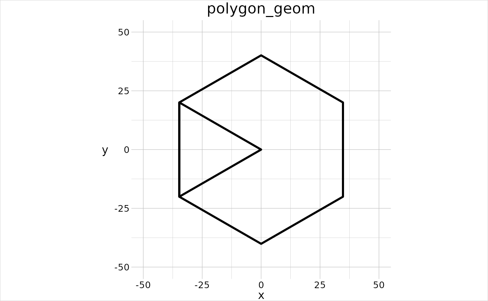

Remove all vertices that are not on the outer ring(s) enclosing all the input features.
gt_dissolve(obj, by = NULL, fid = NULL)
| obj | [ |
|---|---|
| by | [ |
| fid | [ |
geom of the dissolved obj.
This function encompases the functionality of operations that are known under several names.
union: When a new set is created that comprises all input
members. Simple features access proposes that the union operation (both in
at least sf and postgis, st_union) is not only a collection of the
members, but is in fact the merged outcome thereof. ESRI seems to disagree,
because here the union operation is limited to merely intersecting and
combining all new members in one geometric object (while retaining the
parent members attributes), which corresponds to
gt_intersect.
merge: When several features with coinciding vertices are joined into a single feature.
dissolve: When the boundaries between features that shall be merged are removed.
Functionally, these operations all do the same, they identify a certain set
of features (irrespective of whether they overlap or not) that shall be
grouped and joined into a smaller set of features by removing the vertices
that would be inside the outer ring enclosing all features to join.
However, since geometr doesn't know MULTI* features, disjoint
features are not part of the same (MULTI*) feature, but part of the same
feature group.
Other geometry tools:
gt_combine(),
gt_enclose(),
gt_filter(),
gt_intersect(),
gt_locate(),
gt_pull(),
gt_reflect(),
gt_rotate(),
gt_scale(),
gt_skew(),
gt_stretch(),
gt_translate()
newPoly <- gt_dissolve(obj = gtGeoms$polygon)#> Error in gt_dissolve(obj = gtGeoms$polygon): could not find function "gt_dissolve"#> Error in eval_tidy(expr = objs[[i]]): object 'newPoly' not found